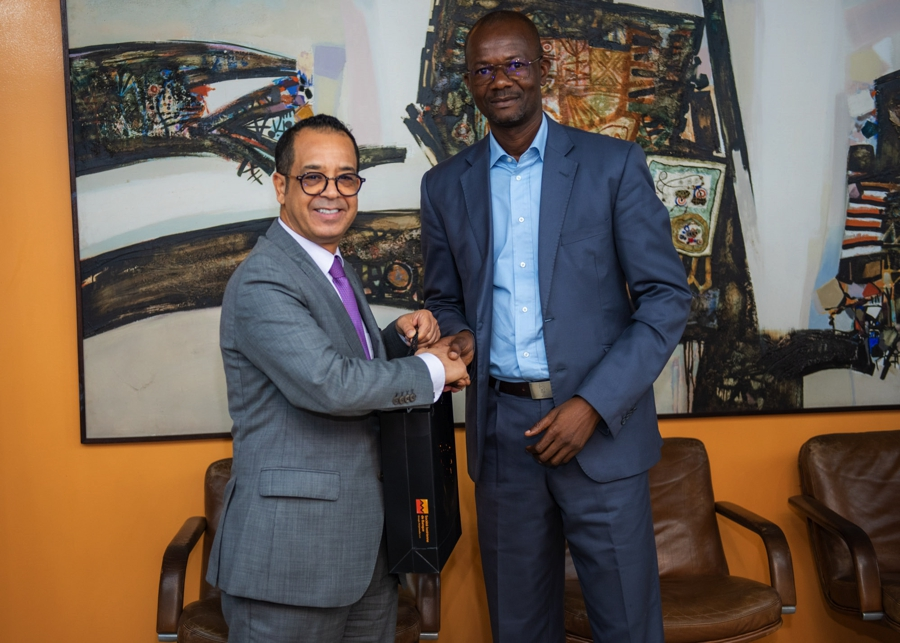

L'École Nouvelle Supérieure d’Ingénieurs et de Technologie (ENSIT) s'engage à offrir une formation d'excellence aux futurs ingénieurs. Découvrez ci-dessous notre histoire et nos événements marquants.

Événements marquants
22 juin 2024 : Journée Carrière 2024 – Une occasion pour nos étudiants de rencontrer des professionnels de divers secteurs et d'explorer des opportunités de carrière.
09 déc 2021 : Convention de Partenariat avec la DSI – Un partenariat stratégique pour renforcer nos formations et offrir des stages de qualité.
18 juin 2022 : Journée Carrière – Un événement annuel pour favoriser les échanges entre étudiants et professionnels.
12 août 2021 : Conférence sur l'AS400 – Une conférence dédiée aux nouvelles technologies et à leur impact dans le domaine informatique.
Journée de charité : Une initiative humanitaire où les étudiants ont apporté leur soutien à un orphelinat local.
Localisation
L'ENSIT est située à Abidjan, dans le quartier des Deux Plateaux. Pour plus d’informations ou pour nous rendre visite, consultez notre page Contact.